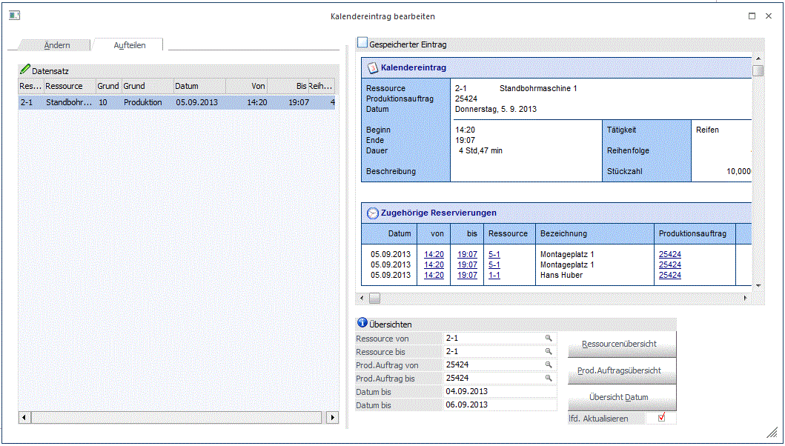

In dieser Tabelle kann eine Tätigkeit auf verschiedene Zeiten aufgeteilt werden.

Beispiel:
Der Facharbeiter Hans Huber soll nicht wie geplant in der Zeit von 16:55 Uhr bis 17:46 Uhr die Tätigkeit "Bremse fertigen" durchführen, sondern verteilt auf 2 Zeitspannen.
Gespeicherter Eintrag
In diesem Info-Bereich werden verschiedene Daten über den aktuellen Status des Kalendereintrags bzw. der zugehörigen Reservierungen angezeigt.
Kalendereintrag
Infos zum Kalendereintrag von der aktuell gewählten Ressource im Infobereich "Zugehörige Reservierung" werden hier angezeigt.
Zugehörige Reservierungen
Es können mehrere Ressourcen als Gruppe für die Durchführung einer Tätigkeit gemeinsam reserviert werden. In diesem Bereich werden die anderen Ressourcen angezeigt, die bei der Tätigkeit-Reservierungen mitspielen. Mit einem Klick auf einer Zeile im Info-Bereich wird der jeweilige Kalendereintrag von der gewählten Ressource automatisch geladen und im Fenster aktualisiert.
Übersichten
In diesem Bereich können drei Kalenderauswertungen eingeschränkt auf der aktuell gewählten Ressource mit den jeweiligen Buttons "Ressourcen Übersicht", "Prod.Auftragsübersicht", "Übersicht Datum" ausgegeben werden.
Buttons
Ø OK-Button
Durch Anklicken des OK-Buttons werden durchgeführte Änderungen gespeichert.
Ø ENDE-Button
Durch Drücken der ESC-Taste wird das Fenster geschlossen.
Ø Löschen-Button
Die Reservierung der ausgewählten Ressource wird gelöscht. Zusätzlich kommt die Abfrage ob die Gruppeneinträge auch gelöscht werden sollen. Wird dies mit "Ja" bestätigt, werden alle mit dieser Reservierung verbunden Ressourcen gelöscht.
Ø Abbruch-Button
Wird der Abbruch-Button angeklickt, werden alle vorgenommen Änderungen verworfen, das Fenster bleibt aber geöffnet.
Ø VCR-Buttons
Mit den VCR-Buttons ist es möglich, zwischen den einzelnen zusammengehörenden Tätigkeiten hin und her zu wechseln. D.h. wenn z.B. die Tätigkeit "Rahmen schweißen" nicht auf einmal eingeplant werden konnte (sowohl am Montag als auch am Dienstag wurde diese Tätigkeit für einen speziellen Produktionsauftrag eingeplant), dann kann man nun zur jeweilig davor/danach liegenden Tätigkeit wechseln.
Achtung:
Der VOR-Button bezieht sich hier nicht auf das höhere Datum sondern auf die Reihenfolge, wie die Tätigkeiten eingeplant wurde. D.h. bei einer Zielproduktion wurden sämtliche Tätigkeiten "negativ" eingeplant und somit springt man hier mit dem VOR-Button zur "vorherigen" Tätigkeit. Bei einer Startproduktion ist das genau umgekehrt.